Профілактика · журнал «ДентАрт» 2021 №2
Вплив зовнішніх факторів на стабільність кольору композитних реставрацій
INFLUENCE OF THE EXTERNAL FACTORS ON COLOR STABILITY OF COMPOSITE RESTORATIONS
НЕ досягнувши бажаного, вони зробили вигляд, що бажали досягнутого.
— Мішель де Монтень
Стабільність кольору реставрацій і композитів – це один з найбільш видимих факторів, на які звертає увагу пацієнт. Реставрація повинна зберігати колір і гладкість поверхні протягом тривалого періоду, щоб служити довго і бути естетично прийнятною. Зміна кольору композитних реставрацій може відбуватися через різні фактори, внутрішні або зовнішні. Хоча в останні роки з появою нових технологій у матеріалознавстві якість відновлювальних композитних матеріалів поліпшилася, зміна їх кольору залишається основною довгостроковою клінічною проблемою.
Стійкість кольору – це здатність будь-якого стоматологічного матеріалу зберігати свій первинний вигляд. Ротова порожнина має динамічне середовище. За постійної присутності мікрофлори, слини і частого вживання кольорової їжі (хроматогенів) стійкість кольору естетичного матеріалу може бути порушена. Однак властивість кольоростійкості естетичних стоматологічних матеріалів часто ігнорується через фокусування на інших фізичних і механічних властивостях. Крім того, широкий спектр матеріалів, що є в розпорядженні клініциста, ускладнює вибір. Ми розглянемо вплив зовнішніх факторів на найпоширеніші типи композитів для того, щоб не тільки зрозуміти принципи поінформованого вибору, а й мати можливість обговорити з пацієнтом можливості більш довготривалого збереження естетичної привабливості усмішки.
Вплив різних типів барвників (харчових та інших), які можуть призвести до зміни кольору стоматологічних матеріалів (таких як чай і кава з цукром і молоком або без них, напої, виноградний сік, вино, вишневий сік, соєвий соус, тютюновий дим і дезінфікуючі засоби, що застосовуються для полоскання рота), вивчався протягом багатьох років.1,2,3
Напої
Уживання деяких напоїв, таких як кава і чай, може вплинути на естетичні та фізичні властивості композитів, тим самим негативно позначаючись на якості реставрації. Газовані напої, які мають pH у кислому діапазоні, також можуть шкодити властивостям відновлювальних матеріалів. Вплив напоїв на властивості композитів прямо пов'язаний з кількістю і частотою їх уживання.4,5
Було доведено, що середовища з низьким рН, такі як кола (рН 2,7), впливають на поверхневу цілісність матеріалів, включаючи смоли, розм'якшуючи матрицю і викликаючи втрату структурних іонів, таких як кальцій, алюміній і силікон зі скляної фази.6
Кількісна характеристика зміни кольору під впливом чаю і кока-коли була описана в роботі турецьких дослідників під керівництвом Tekce Neslihan (табл. 1).7 Останні дослідження нових типів композитів Poggio і співавт. (2017) засвідчили, що всі відновлювальні матеріали показали значні колірні відмінності після занурення у каву.8 Кава викликала значну зміну кольору у всіх тестованих композитних матеріалів (рис. 1). Тільки Filtek Supreme XTE продемонстрував сприйнятливість до червоного вина (рис. 2), жодних інших істотних відмінностей між матеріалами не зафіксовано. Тривала дія деяких харчових барвників, зокрема кави, може істотно вплинути на стійкість кольору сучасних естетичних відновлювальних матеріалів, незалежно від відмінностей у їх складі.
| Матеріал | Підгрупа | ΔL | Δa | Δb | ΔE |
|---|---|---|---|---|---|
| Filtek Silorane (3M ESPE, St. Paul, MN, USA) | Вода | 1,26 ± 1,16 | 1,09 ± 1,48 | -2,2 ± 1,25 | 3,05 ± 1,01 |
| Чай | 1,26 ± 1,16 | 0,38 ± 0,41 | 2,1 ± 0,5 | 3,69 ± 0,76* | |
| Кока-кола | 0,47 ± 1,11 | 0 ± 0,76 | 0,91 ± 0,99 | 1,74 ± 0,65 | |
| Filtek Ultimate Universal Restorative Enamel (3M ESPE, St. Paul, MN, USA) | Вода | -1,02 ± 0,54 | 0,73 ± 0,13 | -3,23 ± 0,45 | 3,5 ± 0,47* |
| Чай | -4,43 ± 1,03 | 0,88 ± 0,36 | 3,83 ± 1,16 | 5,99 ± 1,25* | |
| Кока-кола | -0,94 ± 0,3 | 0,33 ± 0,12 | -0,74 ± 0,59 | 1,35 ± 0,34 | |
| Filtek Ultimate Flowable (3M ESPE, St. Paul, MN, USA) | Вода | -0,76 ± 0,51 | 0,07 ± 0,11 | -3,56 ± 0,44 | 3,67 ± 0,47* |
| Чай | -3,68 ± 0,66 | 1,07 ± 0,55 | 2,63 ± 1,4 | 4,71 ± 1,4* | |
| Кока-кола | -0,87 ± 0,39 | 0,19 ± 0,12 | -0,47 ± 0,93 | 1,31 ± 0,43 | |
| Dyract XP (Dentsply De Trey, Konstanz, Germany) | Вода | 0,3 ± 0,87 | 0,51 ± 0,31 | -3,87 ± 0,88 | 4,01 ± 0,88* |
| Чай | -10,87 ± 2,21 | 1,76 ± 1,25 | 5,12 ± 1,81 | 12,22 ± 2,73* | |
| Кока-кола | -14,21 ± 2,81 | 2,64 ± 0,37 | 4,7 ± 1,41 | 15,28 ± 2,61 |
* Вказує на клінічно неприйнятні значення (ΔE> 3,3).
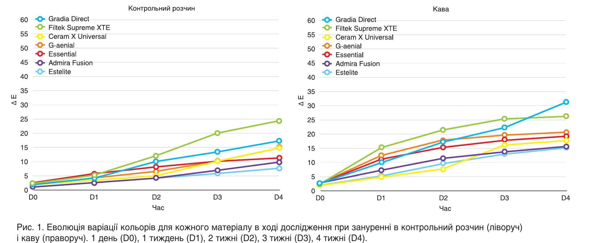
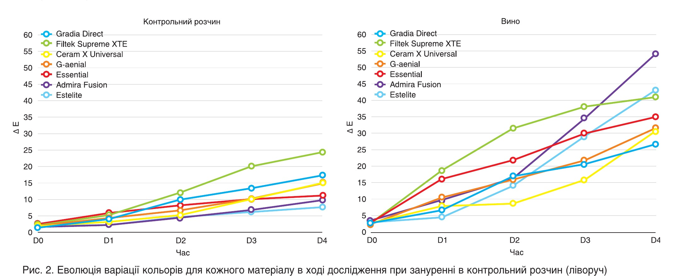
З огляду на сказане, варто звернути увагу пацієнта на особливості того чи іншого композиту, пояснити можливість впливу певного типу продуктів на естетичну привабливість реставрації, порадити хоча б замінити червоне вино на біле, а частоту вживання кави, чаю і газованих напоїв суттєво зменшити, щоб уникнути ефекту накопичення. До речі, на стабільність кольору також впливають енергетичні та спортивні напої.9 Спортсменам і любителям енергетиків варто замінити їх на воду.
Дезінфікуючі засоби
Хлоргексидин широко використовується як місцевий антибактеріальний препарат широкого спектру дії для контролю захворювань ротової порожнини. Відомо, що він викликає зміну кольору тканин ротової порожнини і реставрацій, особливо у поєднанні з дієтичними факторами. Спостерігалося, що дієтичні продукти, які містять танін, мають високий хромогенний потенціал, особливо при застосуванні у поєднанні з хлоргексидином. Денатуровані білки і залізо з раціону містять тіолові групи, які відновлюються до сірки і згодом утворюють сульфід заліза, що відповідає за плями на поверхні композитів.10
На стабільність кольору метакрилових матеріалів (ADT) негативно впливають 2% гіпохлорит натрію (SHC1), 5,25% гіпохлорит натрію (SHC2), пербора натрію (SPB), повідон-йод (PVI), хлоргексидин глюконат (CHG) і глутаральдегід (GTA). Високі значення ΔE* були отримані в групі SHC2, потім ішли, відповідно, групи SHC1, CHG, SPB і PVI. Усі хімічні дезінфікуючі засоби, які використовувалися в дослідженні, впливали на колірні значення ADT. Крім того, значення ΔE* зростали разом із кількістю циклів і загальним часом занурення.11
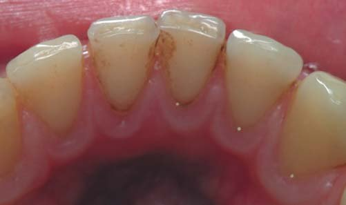
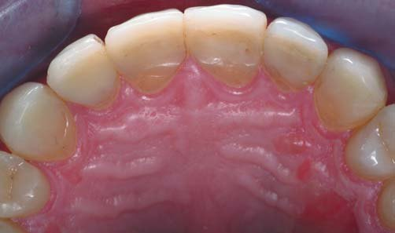
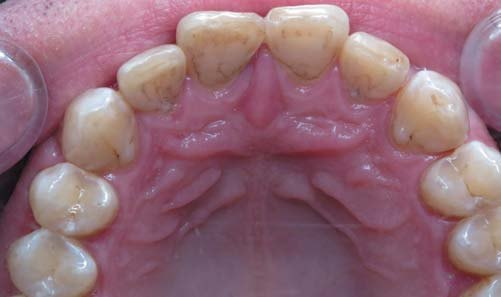
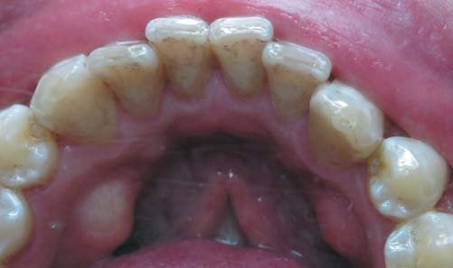
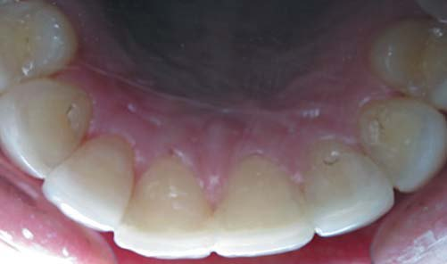
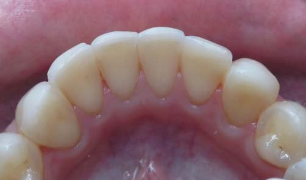
Тютюновий дим
Сигаретний дим є складною сумішшю токсичних речовин і дрібнодисперсних продуктів горіння тютюну, а також однією з основних причин захворюваності та смертності у світі.12 Тютюновий дим шкодить здоров'ю ротової порожнини, може підвищити ризик розвитку раку ротової порожнини, захворювань слизової оболонки рота і пародонта, а також впливати на довговічність стоматологічних імплантатів і результати пародонтологічного лікування. Повна відмова від куріння залишається основним підходом для усунення ризиків впливу тютюнових виробів на здоров'я ротової порожнини. У своєму дослідженні Zhao і співавт. (2017) спостерігали, що колірні відмінності від базової лінії (ΔE) в середньому становили 27,1 (± 3,6) для сигарет. Tetric EvoCeram BulkFill (30,4 ± 1,4) і Filtek Supreme Ultra (28,0 ± 2,5) проявляли більше забарвлювання, ніж Durafill VS (23,0 ± 1,2) (P <0,0001).13 Фактично, сигаретний дим викликав значне знебарвлення стоматологічних композитних смол. Автор припустив, що зменшення або усунення відкладень, отриманих при спалюванні тютюну, може мінімізувати вплив куріння на колір композитів.
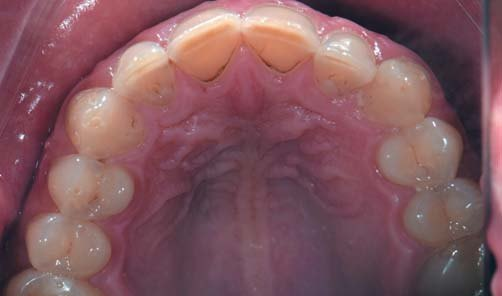
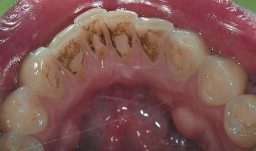
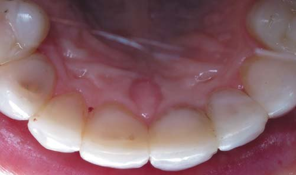
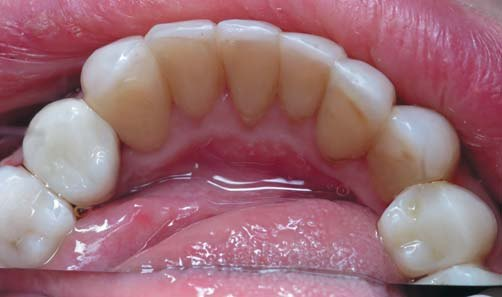
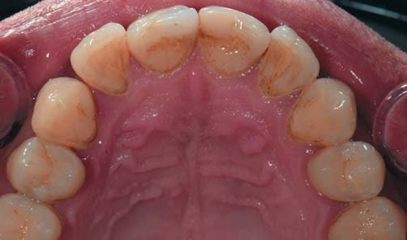
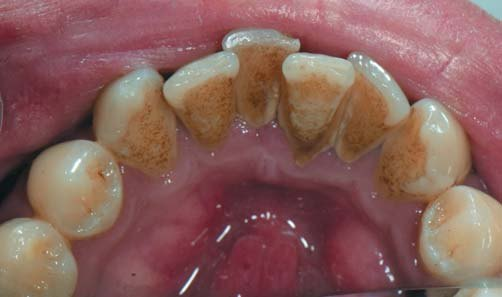
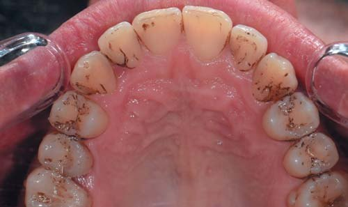
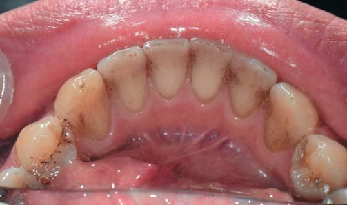
Ще гірше впливає на стабільність кольору реставрацій комбінований вплив різних чинників. Варто зазначити, що дуже часто споживання спиртних напоїв супроводжується курінням. Найзначніша зміна кольору спостерігалася після процесу знебарвлення від віскі, за яким ішов вплив куріння (ΔE* = 22,8-31,5), трохи менш значущим було куріння окремо (ΔE* = 7,0-18,0), куріння, за яким ішло знебарвлення від віскі (ΔE* = 4,9-16,5), і менше шкоди було від віскі окремо (ΔE* = 2,0 до 9,5).14
Якщо взяти до уваги висновок Zhao і співавт., то варто також розглянути вплив бездимних продуктів. У дослідженні Zanetti і співавт. (2019) наведено порівняльну характеристику зміни кольору реставраційних композитів під дією аерозолю системи нагріву тютюну (СНТ 2.2, Philip Morris International) у порівнянні з дослідницькою сигаретою (3R4F). У відповідності до змін значень CIE Lab, значення ΔE емалі, дентину і композитних реставраційних матеріалів збільшувалися з часом в обох групах, але в значно меншому ступені в групі СНТ 2.2 (ΔE = 1,2-3,1), ніж у групі 3R4F (ΔE = 5,2-25,6) (P <0,0001). Дим 3R4F мав значно більший вплив на дентин (ΔE = 13,9-21,3), ніж на емаль (ΔE = 5,2-8,8) (P <0,0001), тоді як аерозоль СНТ 2.2 впливав на дентин (ΔE 1,2-3,1) і емаль (ΔE 1,2-2,8) у порівнянному ступені (P> 0,05). Композитні матеріали в реставраціях класу V на премолярах зазнали аналогічної дії (ΔE = 1,1-3,0) на дентин та емаль в групі СНТ 2.2 (P> 0,05), але не в групі 3R4F, в якій композитні реставраційні матеріали зазнали більшого впливу (ΔE = 12,5-25,6), ніж емаль (P <0,0001).
Висновки
Таким чином, слід докласти всіх зусиль для того, щоб переконати курців кинути курити до реставраційних процедур. Або, як мінімум, скоротити забарвлюючий вплив тютюнового диму завдяки переходу на бездимні альтернативи з доведеним зменшеним впливом на тверді тканини зубів. Це допоможе зберегти естетичну привабливість усмішки і поліпшить стан здоров'я пацієнта в майбутньому. Перед ухваленням рішення про використання того чи іншого композитного матеріалу для реставрації варто обговорити з пацієнтом його звички, а саме споживання хроматогенів, і дати рекомендації щодо зменшення їх впливу для більшої довговічності та естетичної привабливості реставрованих зубів.
Література
- Bagheri R., Burrow M. F., Tyas M. Influence of food-simulating solutions and surface finish on susceptibility to staining of aesthetic restorative materials. J Dent 2005;33:389-98.
- Khokhar Z. A., Razzoog M. E., Yaman P. Color stability of restorative resins. Quintessence Int 1991;22:733-7.
- Raptis C. N., Powers J. M., Fan P. L., Yu R. Staining of composite resins by cigarette smoke. J Oral Rehabil 1982;9:367-71.
- Powers J. M., Fan P. L., Raptis C. N. Color stability of new composite restorative materials under accelerated aging. J Dent Res 1980;59:2071-4.
- Fay R. M., Servos T., Powers J. M. Color of restorative materials after staining and bleaching. Oper Dent 1999;24:292-6.
- Ergucu Z., Tukun L. S., Aladag A. Color stability of nanocomposites polished with one-step systems. Oper Dent 2008;33:413-20.
- Tekce Neslihan & Tuncer Safa & Demirci Mustafa & Serim Merve & Baydemir Canan. (2015). The effect of different drinks on the color stability of different restorative materials after one month. Restorative Dentistry & Endodontics. 40. 255. 10.5395/rde.2015.40.4.255.
- Poggio C., Vialba L., Berardengo A., et al. Color Stability of New Esthetic Restorative Materials: A Spectrophotometric Analysis. J Funct Biomater. 2017;8(3):26. Published 2017 Jul 6. doi:10.3390/jfb8030026
- Erdemir U., Yildiz E., Eren M. M. Effects of sports drinks on color stability of nanofilled and microhybrid composites after long-term immersion. J Dent. 2012 Dec;40 Suppl 2:e55-63.
- Nordbö H., Attramadal A., Eriksen H. M. Iron discoloration of acrylic resin exposed to chlorhexidine or tannic acid: A model study. J Prosthet Dent 1983;49:126-9.
- Piskin Bulent & Sipahi Cumhur & Akin Hakan. (2014). Effect of Different Chemical Disinfectants on Color Stability of Acrylic Denture Teeth: Color Stability of Acrylic Teeth. Journal of prosthodontics: official journal of the American College of Prosthodontists. 23. 10.1111/jopr.12131.
- World Health Organization. Global Burden of Disease. https://www.who.int/gho/mortality_burden_disease/global_burden_disease/en/
- Zhao X., Zanetti F., Majeed S., Pan J., Malmstrom H., Peitsch M. C., Hoeng J., Ren Y. Effects of cigarette smoking on color stability of dental resin composites. Am J Dent. 2017 Dec;30(6):316-322. PMID: 29251454.
- Wasilewski Mariana & Takahashi M. K. & Kirsten Giovanna & Souza Evelise. (2010). Effect of cigarette smoke and whiskey on the color stability of dental composites. American journal of dentistry. 23. 4-8.